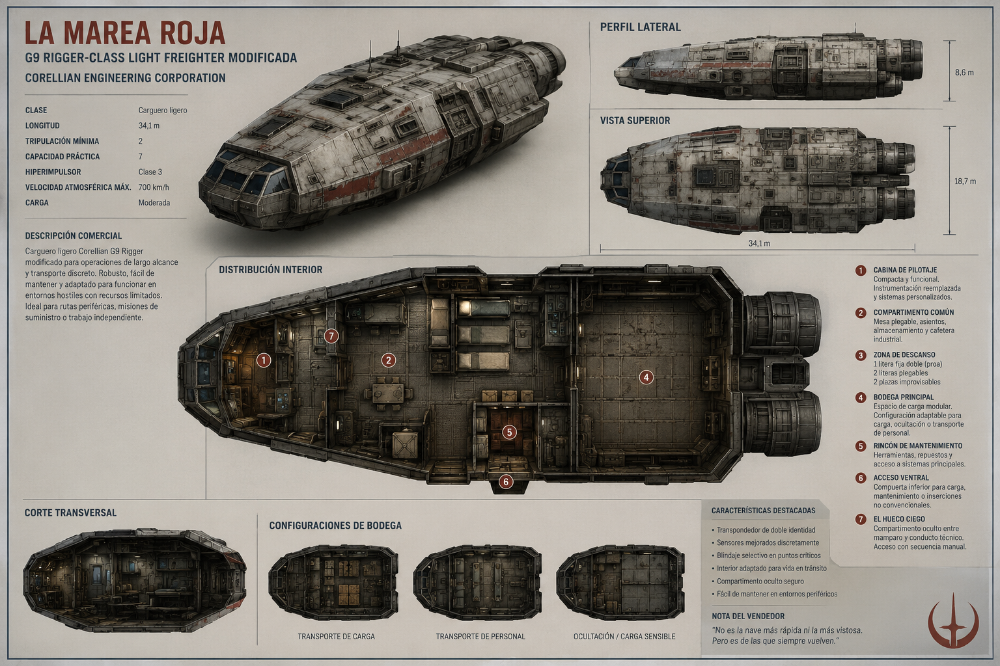
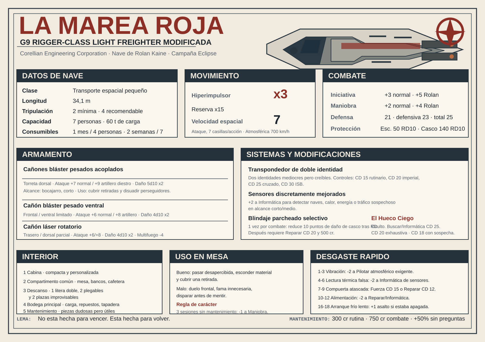

Archivo visual
Referencia rápida para reconocer la nave por fuera y entender su distribución interior.

Resumen rápido
Lo que el jugador necesita recordar sin bucear en motores, transpondedores y juntas térmicas.
Fortalezas
- Pasa desapercibida: parece un carguero viejo sin importancia.
- Aguanta más de lo que su aspecto promete.
- Puede mover célula, equipo, tapadera comercial y carga sensible.
- Tiene sensores discretamente mejorados.
- Posee un compartimento oculto: El Hueco Ciego.
Debilidades
- No es rápida. Si compite por velocidad pura, mala noche.
- No está diseñada para duelos serios contra naves militares.
- Siempre necesita una pieza, un ajuste o una mentira administrativa.
- Vivir siete personas dentro es posible, no agradable.
- Cuanto más dispara, menos creíble resulta su tapadera civil.
Ficha d20 Revised
Versión pensada para jugar. Ajustada para que la nave sea útil, no invencible.
Datos generales
| Clase | Transporte espacial |
|---|---|
| Tamaño | Pequeño, 34,1 m |
| Tripulación | 2 mínima; 4 recomendable |
| Pasajeros | 5 adicionales; hasta 7 personas en total con incomodidad |
| Carga operativa | 60 toneladas |
| Carga forzada | 80 toneladas, sacrificando habitabilidad |
| Consumibles | 1 mes para 4 personas; 2 semanas para 7 |
| Hiperimpulsor | x3; reserva x15 |
| Velocidad espacial | Ataque, 7 casillas por acción |
| Velocidad atmosférica | 700 km/h; 12 casillas por acción |
Estadísticas de combate
| Iniciativa, tripulación normal | +3 |
|---|---|
| Iniciativa, Rolan al mando | +5 |
| Maniobra, tripulación normal | +2 |
| Maniobra, Rolan al mando | +4 |
| Defensa | 21 |
| Volando defensivamente | Defensa 23 |
| Defensa total | Defensa 25 |
| Escudos | 50 puntos; RD 10 |
| Casco | 140 puntos; RD 10 |
| Precio estimado | 85.000 créditos usada; 130.000 si se conocen las modificaciones |
Lectura rápida para el jugador
La Marea Roja no está equilibrada para ganar batallas espaciales largas. Está equilibrada para escapar, ocultarse, improvisar y sobrevivir lo suficiente como para que alguien pueda decir: “no preguntes, arranca”.
Armamento
Puede defenderse y cubrir una retirada. Si intenta comportarse como una corbeta, el universo le dará una clase magistral de humildad.
Cañones bláster pesados acoplados
Sector: torreta dorsal.
Ataque, tripulación normal: +7.
Ataque, artillero diestro: +9.
Daño: 5d10 x2.
Alcance: bocajarro, corto.
Cañón bláster pesado ventral
Sector: frontal / ventral limitado.
Ataque, tripulación normal: +6.
Ataque, artillero diestro: +8.
Daño: 4d10 x2.
Alcance: bocajarro, corto.
Sistemas especiales
Lo que hace que la nave sea de Rolan y no un simple hierro cansado comprado en puerto.
Transpondedor de doble identidad
La nave no lleva una identidad limpia y una falsa perfecta. Lleva dos identidades mediocres pero creíbles: una como carguero secundario de suministros y otra como transporte autónomo de rutas periféricas.
| CD 15 | Control portuario rutinario. |
|---|---|
| CD 20 | Inspección imperial administrativa. |
| CD 25 | Escaneo cruzado con registros sectoriales. |
| CD 30 | Revisión especializada del ISB o inteligencia naval. |
Habilidades útiles: Informática, Falsificar, Astrogación, Engañar o contactos portuarios, según escena.
Sensores discretamente mejorados
No son sensores militares, pero están por encima de lo que el aspecto exterior sugiere. Conceden +2 a pruebas de Informática para detectar naves, lecturas térmicas, rastros de energía o inconsistencias de tráfico en alcance corto o medio.
Limitación: no atraviesan contramedidas militares serias, ocultación avanzada ni blancos apagados.
Blindaje parcheado selectivo
No está blindada por completo. Rolan reforzó zonas concretas: acceso a cabina, lateral de bodega, sección baja de motores y mamparo interior del compartimento principal.
Regla opcional: una vez por combate espacial, cuando un impacto cause daño al casco, se puede declarar que el golpe alcanza una zona reforzada. Reduce el daño final en 10 puntos adicionales después de aplicar RD. Después queda dañado y requiere Reparar CD 20 y 500 créditos en piezas.
El Hueco Ciego
Compartimento oculto situado entre el mamparo trasero de cabina y un conducto de alimentación secundaria. Está protegido por una placa falsa estructural, aislamiento térmico y cierre físico oculto.
Sirve para chips de datos, documentación falsa, credenciales, medicación sensible, un bláster desmontado, explosivos compactos o una caja pequeña que oficialmente no existe.
| Inspección visual rápida | Buscar CD 30 |
|---|---|
| Inspección técnica normal | Buscar o Informática CD 25 |
| Escaneo térmico estándar | Informática CD 25 |
| Revisión imperial exhaustiva | Buscar o Informática CD 20 |
| Especialista con sospecha previa | Buscar o Informática CD 18 |
Apertura sin romper nada: desactivar dos líneas menores del panel auxiliar, mover el balance energético a una posición incorrecta a propósito y liberar un cierre físico bajo una junta térmica.
Interior de la nave
Un hogar de metal cansado. Habitable, no cómodo. Suficiente, no amable.
Cabina
Compacta, llena de mandos sustituidos y pequeñas correcciones hechas a mano. Rolan sabe qué luces importan y cuáles solo dramatizan.
Compartimento común
Mesa plegable, bancos, módulo de almacenamiento y cafetera mediocre. Espacio perfecto para discutir en voz baja o callarse con resentimiento.
Zona de descanso
Una litera fija doble muy justa, dos literas plegables y dos plazas improvisables en bancos o suelo técnico acondicionado.
Bodega principal
Carga media, cajas tapadera, repuestos, herramientas y material sensible. Puede vaciarse para evacuar personas o mover equipo urgente.
Rincón de mantenimiento
No es un taller serio, pero siempre hay alguna herramienta que puede servir y algún componente que nadie sabe si aún funciona.
Acceso ventral
Útil para mantenimiento, ocultación breve o salida poco elegante durante inspecciones. Nadie queda digno saliendo por ahí. A veces eso salva vidas.
Averías y manías
La nave no falla porque sí. Se queja con criterio.
Tabla rápida de desgaste
Después de una persecución, combate espacial, salto apresurado o despegue forzado, el DJ puede tirar 1d20 o elegir una complicación.
| 1-3 | Vibración de ascenso. -2 a Pilotar en la siguiente maniobra atmosférica exigente hasta revisar estabilizadores. Reparar CD 15. |
|---|---|
| 4-6 | Lectura térmica falsa. -2 a Informática para escaneos térmicos durante una escena. Reparar CD 15. |
| 7-9 | Compuerta interior atascada. Abrir requiere acción completa y Fuerza CD 15 o Reparar CD 12. |
| 10-12 | Alimentación secundaria inestable. -2 a una prueba de Reparar o Informática relacionada con sistemas internos. |
| 13-15 | Ruido de conducto central. Sin penalizador, pero cualquiera que no conozca la nave se inquieta. |
| 16-18 | Arranque frío lento. La nave tarda 1 asalto adicional en estar lista si estaba apagada. |
| 19-20 | Hoy no se queja. La Marea Roja funciona con una dignidad casi ofensiva. |
Mantenimiento
| Rutina mensual | 300 créditos |
|---|---|
| Tras persecución o combate | 750 créditos |
| Sistemas menores | 250-500 créditos |
| Daño de casco | 100 créditos por punto de casco |
| Sin preguntas | +50% al coste |
| Puerto imperial limpio | Más barato, pero deja registro |
Regla de carácter
Si pasan más de tres sesiones sin mantenimiento narrativo, el DJ puede imponer -1 a Maniobra hasta que se dedique tiempo, piezas y atención a la nave.
La Marea Roja no exige cariño. Exige respeto técnico. Es muy distinto.
Uso en mesa
Guía directa para que el jugador sepa qué puede intentar con ella.
Buenas ideas
- Pasar por carguero menor sin importancia.
- Detectar tráfico sospechoso antes de entrar en una zona caliente.
- Esconder material sensible en El Hueco Ciego.
- Cubrir la retirada con fuego defensivo.
- Usar la bodega como refugio, sala de reunión o evacuación improvisada.
- Mentir con papeles mediocres pero plausibles.
Malas ideas
- Enfrentarse frontalmente a cazas o patrulleras imperiales.
- Confiar en el hiperimpulsor x3 como si fuera una maravilla moderna.
- Dejar que cualquiera pilote la nave con brusquedad.
- Disparar antes de comprobar si aún se puede mentir.
- Olvidar que cada reparación en puerto deja huellas.
- Convertir una nave discreta en una nave famosa.
Puestos de tripulación
| Piloto | Decide velocidad, evasión, aproximaciones y maniobras defensivas. Normalmente Rolan. |
|---|---|
| Copiloto / navegante | Astrogación, apoyo al piloto y coordinación de saltos. |
| Artillero | Opera la torreta dorsal o el cañón ventral. |
| Técnico / ingeniero | Reparar, redirigir energía, estabilizar escudos y mantener la nave viva. |
| Operador de sensores | Detecta tráfico, interferencias, firmas térmicas e inspecciones sospechosas. |
Frases de mesa para Rolan
“No es vieja. Es selectiva.”
“Si esa luz se enciende, no pasa nada. Si se apaga, entonces sí.”
“La nave no está fallando. Está negociando.”
“No dispares todavía. Una mentira sale más barata que una reparación.”
“Si oyes tres golpes, mal. Si oyes cuatro, es normal.”
Ficha de mesa imprimible
Una página horizontal para imprimir o abrir en una tablet durante la sesión.

{kind=link}
LA MAREA ROJA. G9 Rigger modificada. Transporte espacial pequeño. Tripulación 2 mínima, 4 recomendable. Capacidad real 7 personas. Carga 60 t. Consumibles 1 mes para 4 o 2 semanas para 7. Hiperimpulsor x3, reserva x15. Velocidad espacial 7 casillas. Atmosférica 700 km/h. Iniciativa +3 normal o +5 Rolan. Maniobra +2 normal o +4 Rolan. Defensa 21, defensiva 23, total 25. Escudos 50 RD 10. Casco 140 RD 10. Armas: blásteres pesados acoplados +7/+9, 5d10x2; bláster ventral +6/+8, 4d10x2. Sistemas: doble transpondedor, sensores +2, blindaje selectivo, bodega modular, El Hueco Ciego.